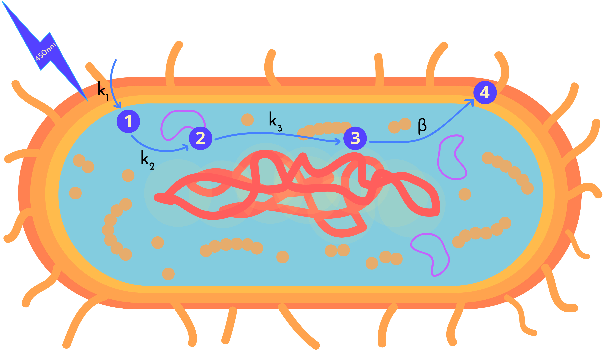
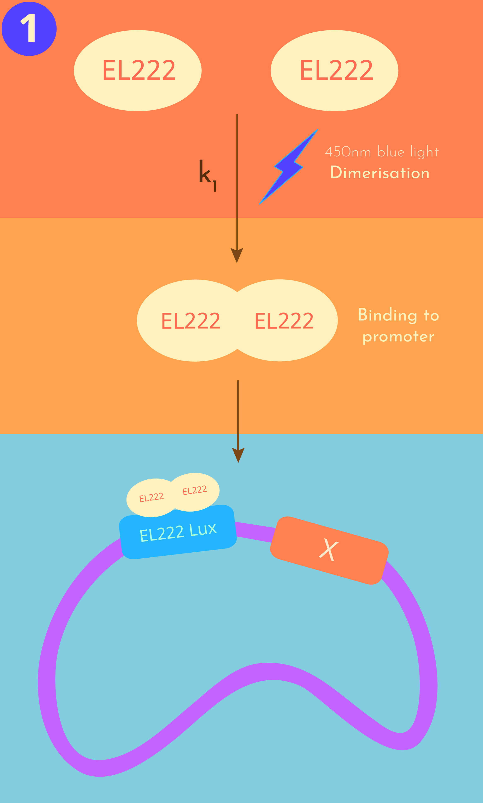
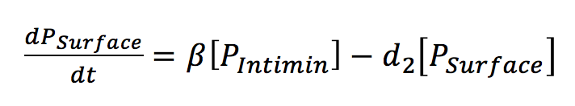

‘LEGIT: From light to structure’
A mathematical model of how E. Coli cells are guided to form structures
Model aims
- Determine the rate limiting cellular mechanism
- Optimise the rate limiting parameters by using a conventional (Sensitivity Analysis) and an innovative (Paramter Sampling) approach
- Determine the range of optimal light intensities and light pulses our Wet Lab should test in the lab
- Conduct a Cost Analysis to evaluate the economic viability of our optogenetic tools

Legend
EM = EL222 monomer
ED = EL222 dimer
PrLuxI = LuxI Promoter
PrLuxI+ED = EL222 dimer bound to the promoter
PIntimin = Intimin protein in the cytoplasm
PSurface = Intimin protein on the cell surface
The Science behind LEGIT

LEGIT models the light activated expression of the protein intimin on the surface of our E.coli cells.
The binding partners SpyTag and SpyCatcher are fused to the intimin protein and allow the cells to adhere to each other.
Therefore, we attempted to optimise the number of intimin proteins expressed on the surface of the E.coli cells to increase
the speed at which our cells could adhere to eachother.
Our model can be divided into four main steps:
- 1. Light activation (We want to make these links- where when you press on them you get directed to this section)
- 2. Transcription
- 3. Translation
- 4. Trasnport of intimin to the surface of the cell
We decided to incorporate some innovative twists in our LEGIT model, where we modelled:
- The rate kinetics of a light induced system
- The transmembranal transport of intimin protein to the cell surface
Light activation

Step 1: Photoactivation, dimerization and binding of the Transcription Factor (EL222) to the LuxI promoter
Location: Cytoplasm
The first step of our simulation is the photo-activated dimerization of two EL222 monomers (EL222M) to produce an active EL222 dimer (EL222D).
The EL222D then binds to the LuxI promoter.

The photoactivation is dependent on light intensity (L). The Hill equation is commonly used to fit inducible promoter genetic circuits. We therefore decided to adapt the Hill equation in our ODE to evaluate the effect different light intensities would have on the rate of photoactivation of EL222.

Transcription

Step 2: Transcription
Location: Cytoplasm
The second step of our simulation is the production of mRNA from transcription.
The production of mRNA is dependent upon the concentration of the EL222D and the rate at which EL222D binds to the
LuxI promoter. Dilution rates were taken into consideration to account for cell growth and mRNA degradation.

Translation

Step 3: Translation
Location: Cytoplasm
The third step of our simulation is the production of the surface protein intimin from translation. The change in concentration of the intracellular intimin protein over time is dependent on the rate of mRNAs translation. A degradation term was introduced to represent the degradation of intimin over time because of dilution due to
cell growth and the half-life of the intimin protein.

After translation intimin is continuously transported to the surface of the E.coli, therefore its concentration in the cytoplasm decreases over time. To account for this, we created a function that takes the transport rate of intimin to the surface of the E.coli cells into consideration.

The transport of Intimin from the cytoplasm to the cell surface is dependent upon the availabile space on their surface. We expect the transport rate of intimin to the surface to decrease as availability of space decreases. To describe this, we adapted the Michaelis Menten equation
to consider the intimin molecules already occupying the plasma membrane (PSurface), and the maximum available space on the cell surface.
The variable η sets a limit for the maximum number of intimin proteins that can be expressed on the cell surface and prevents any other proteins from becomming expressed once that limit is reached.
Transport

Step 3: Transport of intimin to the surface of the cell
Location: E.coli capsule
Our final differential equation simulates the change in concentration of intimin expressed on the surface of the cells over time. The equation takes both the rate taken for intimin to be transported to the cell surface and intimins degradation rate into consideration.

Not enough science? Check out the project description page!
Results
From our LEGIT simulation we compiled the graphs generated, evaluated their results
and determined the optimal range of values our Wet Lab team should evaluate for the rate-limiting parameters we identified.
Determining the rate limiting step in intimin expression
We used rate kinetics modelling to determine the rate limiting step in the cellular mechanisms involved in intimin expression.
Click here to check out our approaches and assumptions!

Figure 1 Rate of Cellular Mechanisms involved in intimin expression
The concentration of the surface expressed intimin appears to be much lower than that of all the other species produced.
Therefore, we decided to plot a second figure to evaluate the rate taken to transport intimin to the surface of the cell.

Figure 2 Re-scaled plot of Figure 1 to view the rate of the surface expression of intimin
| Step |
Time taken to plateau (hr) |
| Dimerization of EL222 |
1.3 |
| Transcription |
2.4 |
| Translation |
2.5 |
| Transport of intimin to the surface |
3.2 |
A rate limiting step in a process is the step that takes the longest amount of time to reach its maximum value, essentially the step that takes the longest time to plateau.
We identified the rate at which intimin is transported to the surface of the cells as the rate limiting step in this cellular mechanism.
The rapidity of our LIT technology is vital, therefore we decided to identify the rate limiting parameters within the ODE that describes the transport of intimin to the cell surface in our model.
Optimising Light intensity
Our LEGIT model is initiated with the photoactivation of our EL222M transcription factor. Therefore we thought it would be interesting to evaluate the effect
different light intensities had on the concentration and rate of expression of intimin on the cell surface. The range of values we selected to test fell within the range of 0 W/m2 and
70 W/m2, where 0 W/m2 represented our system in its off state and 70 W/m2 represented the maximum light intensity E.coli can withstand
before they start dying.
Approach 1

Figure 3 Effect of light intensity on the concentration and rate of expression of intimin on the cell surface
From Figure 3 it is evident that an increase in the light intensity used to activate the expression of intimin corresponds to a direct increase in the concentration of intimin expressed on the surface of the cells.
Interestingly, at 0 W/m2 we still experience some intimin expression due to leakage of promoter expression. The concentration of intimin expressed at a light intensity of 0 W/m2 was assumed to not be sufficient to cause cell adhesion.
Wetlab contribution
Real life experimental data could be obtained for this model by extracting the EL222M from E.coli cells, exposing it to different intensities of blue light and running it on an SDS page.
With this procedure one could evaluate the effect light intensity has on the extent of dimerisation EL222M undergoes.
The amount of dimerisation taking place could be measured by looking at the distance the EL222 extracts travel down the SDS page, where a shorter distance will be travelled by the EL222D due to its larger molecular weight.
Optimising the parameters from the rate-limiting step
We decided to optimize the rate-limiting parameters present in the ODE which describes the transport of intimin to the cell surface. The main rate-limiting parameters identified were: Vmax and Km.
The maximum and minimum values that could be assigned to each parameter were determined from papers. We decided to optimise the values for each parameter by using two approaches, a Sensitivity Analysis and Parameter Sampling.
Optimising the Km value
In the transport of intimin to the surface of the cell Km represents the affinity the surface of the cell has for intimin. Ideally, we would want a low Km value to increase the affinity of the cell surface for the intimin as this would decrease the time taken for intimin to be transported to the cell surface.
Sensitivity Analysis for Km
Figure 5: Effect Km has on the rate of intimin expression on the cell surface
Parameter Sampling for Km

Figure 6: Effect Km has on the rate of intimin expression on the cell surface
Optimising the Vmax value
The parameter Vmax represents the maximum rate at which intimin can be expressed on the surface of the cell.
Therefore, we would want to maximise the value of Vmax to decrease the time it takes for the surface of the cell to fill up with intimin.
Sensitivity Analysis for Vmax

Figure 7: Effect Vmax has on the rate of intimin expression on the cell surface
Parameter Sampling for Vmax
Figure 8: Effect Vmax has on the rate of intimin expression on the cell surface
Determining the effect light pulsing has on intimin expression
After we determined increasing light intensity has a directly proportional increase on the concentration
and the rate of expression of intimin we decided to evaluate the effect other light properties would have on our system. Therefore, we decided to evaluate whether light pulsing had an effect on intimin expression, more specifically we wanted to see whether continuously activating and
deactivating our light induced system resulted in the expression of a larger concentration of intimin on the surface of the cell.
We first ran the whole cellular mechanism with one pulse of light, to ensure we received a curved response that would simulate the activation and deactivation of our cellular mechanisms for a defined period of time.

Figure 9: Effect one pulse has on the rate kinetics on the expression of intimin
From Figure 9 it is evident that all the steps involved in the expression of intimin experience a dumb bell shape, in terms of the concentration of species produced after each step. This is justifiable, as when the light is turned off we expect the rate of product production to become smaller than the rate of product degradation. Therefore, as time passes the concentration of each product from each step is expected to decrease, until eventually all the species from the product produced degrade.
We then wanted to evaluate the effect pulsing for periods of 4 hours would have on the expression of intimin on the surface of the cell.

Figure 10: Effect pulsing light in 4 hour intervals has on the intimin surface expression
From Figure 10 we discovered that if we pulse light on the cells for a period of 4 hours three times within 24 hours, we experience more than a 10-fold increase in the concentration of intimin expressed on the surface of the cells.
Optimised conditions
The biggest increase in the rate of intimin expression on the surface of the cells occurrs when the value of ‘km’ decreases and the values of ‘Vmax’ increases. This is something we expected, as the lower the value of km the higher the affinity an enzyme has for a substrate, therefore the faster the transport of the substrate to the active site of the membrane. In addition, the higher the Vmax the faster the rate at which the reaction occurs. Thus, the combination of both of these phenomena results in a faster transport of intimin to the surface of the cell.
| Optimised Paramter |
Value |
| Km (uM) |
1 |
| Vmax (1/h) |
3600 |
Running the model with optimised paramters
We ran our rate kinetics model with our newly optimised parameters and determined that although the parameters were optimised and a larger concentration of intimin was transported to the surface of the cell, the same time was taken for the intimin expression rate to plateau.

Figure 11: Original rate kinetics for the transport of intimin to the cell surface

Figure 12: Optimised rate kinetics for the transport of intimin to the cell surface
Cost Analysis
A Cost Analysis was run to ensure our LIT optogenetic tool was an affordable technology. We decided to determine the different operational costs a user would incur depending on: the light intensity they used to activate the E.coli cellular mechanism; and the presence and frequency of light pulsing.
We created a function in Python that took costs incurred for both methods into consideration.

Figure 13: Effect light intensity has on the cost of the optogenetic tool
From Figure 13 it is evident that the costs increases directly proportionally to the light intensity at which our optogenetic tool is operated at. The simulaiton was run for a period of 2 hours, as we decided to keep pulsing constant.
We also decided to analyse the impact of light pulsing on the overall proce of the process.

Figure 9 Effect of pulsing on the cost for operation of 2 hours.
Similarly to figure 8, we see that an increase in the pulse duration results in a proportional increase in the cost of operation.
We then decided to plot the effect of different light intensities and pulsing durations have on the overall cost for the operation.

Figure 10 Compairison of the effects of pulsing and light intensity on the overall cost.
The lines representing the effect of light intensity and light pulsing on the overall operation cost, intersect at BLABLA
Alternative applications of our model